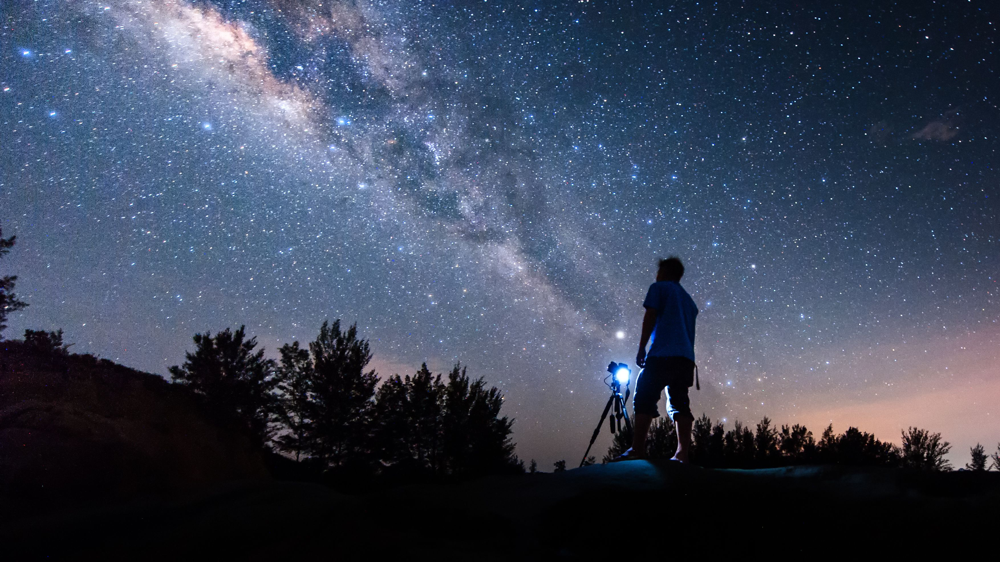

The National Star Gazing Society (NSGS), founded in 2020, encourages and promotes the study of astronomy, solar-system science, geophysics and closely related branches of science.
Its more than 5,000, a quarter based overseas, consists of primarily professional astronomers and geophysicists, with a significant number of students, advanced amateur astronomers, as well as historians of astronomy and geophysics, and others with an interest in the geo- and astro-sciences. Its central London premises are available for use by its Fellows and others.

The NSGS exists to advance, and to record the history of, our understanding of the Earth, the solar system, the stars and galaxies, and the nature of the universe. It does this by promoting Astronomy and Geophysics, interdisciplinary sciences that encompass and further our understanding of physics, chemistry, mathematics, biology, engineering and computer science to answer deep questions about the origin and fate of the cosmos, and people’s place in it. Through this the Society contributes to the growth and dissemination of knowledge and thereby fulfils its charitable objective of serving the public interest